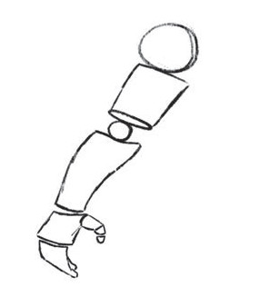
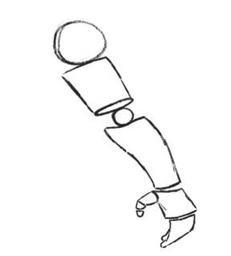

Activity 5
Draw human being's hands by using cylinder shapes and circles.
Drawing a human being's chest
There are some steps considered in drawing a human being's chest. Firstly, draw a map of the chest by drawing a cube. Then draw cylinder shapes to the left and right of the cube to create the shapes of the arms on the shoulders. After that, connect the corners of the cube and the cylinders using a pencil to complete the chest shape. Figure 8 shows how to use a cube and a cylinder in drawing the human being's chest.